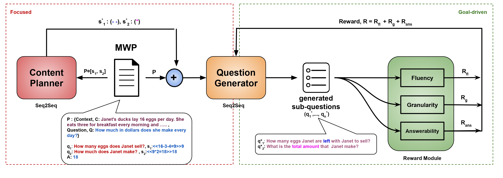

Automatic Generation of Socratic Subquestions for Teaching Math Word Problems
EMNLP '22
Subquestioning in LLMs (Problem Decomposition)
Subquestioning in large language models (LLMs) refers to the process of breaking down complex queries or tasks into smaller, more manageable sub-questions or sub-problems , a technique closely aligned with problem decomposition. This approach enables LLMs to tackle intricate problems step-by-step, improving accuracy and the quality of responses. By sequentially answering each subquestion, the model can provide more detailed and structured responses, particularly for tasks that require multi-step reasoning or the integration of various types of information. Subquestioning is beneficial in domains like multi-faceted reasoning, complex decision-making, and creative problem-solving, where a single answer may not capture the full depth of the query. This structured approach mirrors human thinking patterns, allowing LLMs to perform better in understanding context, nuance, and the logical progression of ideas.
Socratic Subquestions for Teaching Math Word Problems

Our overall methodology: Two Socratic properties of focused (red dotted box) and goal-driven (green
dotted box) question generation are added to the question generation model with a combination of content planning
and reward based finetuning. Here, ⊕ represents the concatenation operation.
In our paper, Automatic Generation of Socratic Subquestions for Teaching Math Word Problems, we investigate how breaking complex math word problems into smaller,
structured subquestions improves the problem-solving process. We designed a model that generates these subquestions automatically using a transformer-based architecture.
By focusing on key problem-solving components, such as operators and equations, we ensure that each question addresses a specific step toward the solution.
Our approach optimizes questioning through rewards—fluency, granularity, and answerability—to guide learners through each step logically, making the problem more manageable and
improving overall comprehension.
In our work, we explore two main research questions:
1. Does sub-questioning help in understanding a math word problem better? We aimed to assess whether breaking down problems into subquestions improves comprehension and solving accuracy.
2. What are the properties of a good questioning strategy?
We examined how factors like question order, content, and granularity affect the success of subquestioning.
Our experiments showed that the right sequence of relevant, structured questions significantly enhances problem-solving abilities.
Results
the results showed clear improvements in problem-solving using our Socratic subquestioning approach. When subquestions were introduced, we observed an increase in solution accuracy by approximately 15-20% compared to models without subquestions. Additionally, when we tested different configurations, we found that using properly ordered, goal-driven subquestions boosted performance by 10-12% over randomly ordered or unstructured questions. These results confirm the importance of structured, focused questioning in enhancing both problem comprehension and accuracy in reaching the correct solution.
First-Step Advantage: Importance of Starting Right in Multi-Step Math Reasoning

Our overall methodology: Comparison between Chain-of-Thought (CoT) approach and QuestCoT
We explore how guiding models correctly from the first step can lead to substantial improvements in solving complex, multi-step reasoning tasks, particularly in
mathematics. This approach is closely tied to the concept of problem decomposition through subquestioning, where complex problems are broken down into smaller,
more manageable parts.
Just as subquestioning helps a model or learner by focusing on specific, essential sub-tasks, our strategy emphasizes the importance of solving the initial
step correctly in multi-step reasoning. In both cases, addressing the problem piece by piece ensures a structured progression towards the correct solution.
For example, our experiments demonstrate that providing early guidance improves problem-solving performance significantly—over 100% when GPT-4 is used as a
"teacher" for smaller models like LLaMA 7B. This mirrors how subquestion decomposition improves performance by sequentially tackling smaller, easier-to-handle components
of a problem
QuestCoT
We introduce QuestCoT (Question-Chain-of-Thought) as a method for improving multi-step reasoning in smaller language models by focusing on the first step of problem-solving. QuestCoT builds on the concept of Chain-of-Thought (CoT) prompting by having the model ask itself an initial guiding question before proceeding with a step-by-step reasoning process.
Key Idea Behind QuestCoT:
QuestCoT ensures that the model starts correctly by encouraging it to generate a question related to the first step of the problem. This early question serves as a foundation for solving the rest of the problem, guiding the model through a structured reasoning chain. This approach is particularly valuable in complex, multi-step tasks like math word problems, where getting the first step right significantly impacts the final solution.
Results
Our research shows that when smaller models receive expert guidance (e.g., from larger models like GPT-4) at the first step, their performance can improve by over
100% in some cases. Models that start correctly can often continue solving the problem more effectively.
Summary of the results:
1.Significant Performance Boost with First-Step Guidance: When models like LLaMA 7B received guidance on how to approach the first step of solving problems,
their performance improved by up to 40%. For instance, LLaMA 7B's baseline accuracy of 34.19% on the GSM8K dataset increased to 47.6% with first-step guidance from GPT-4.
2. Cumulative Gains with Larger Models as Teachers: s the size of the guiding model increased, so did the performance of the student models.
For example, when GPT-4 provided the first-step guidance, LLaMA 7B's performance more than doubled, improving from 10.5% to 23.2%.